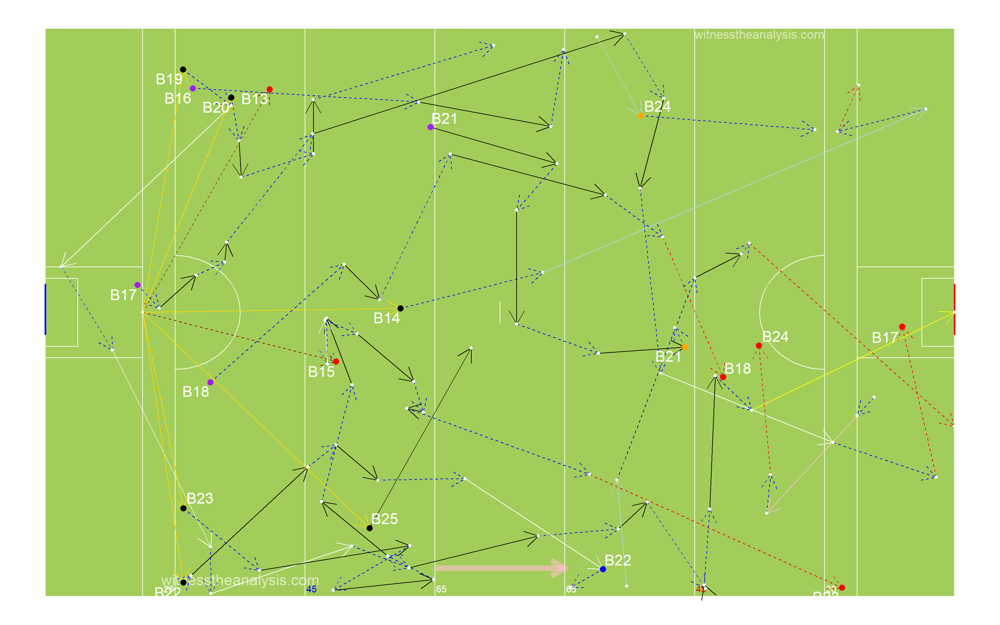
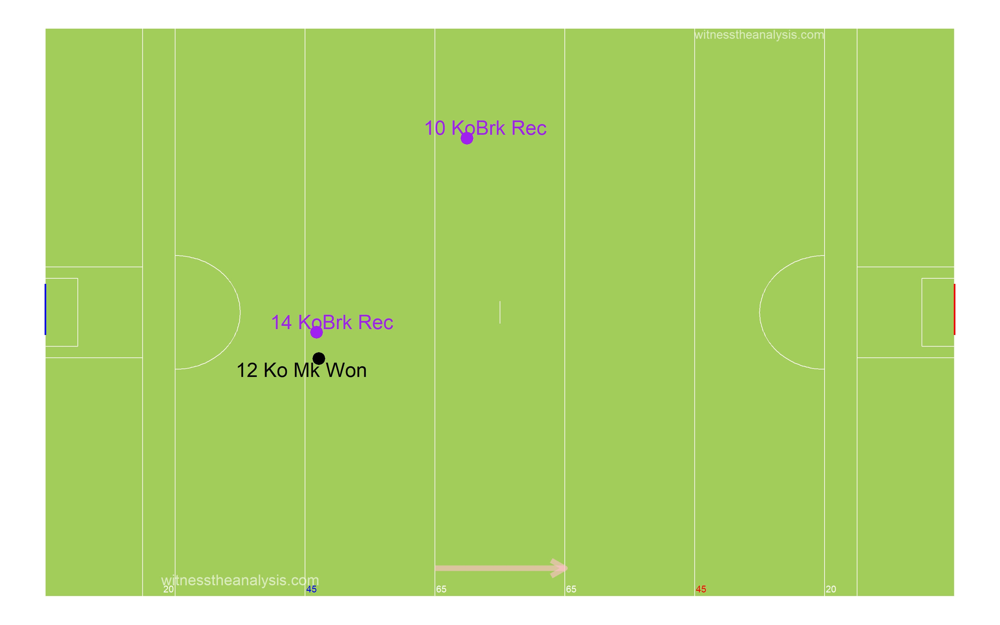
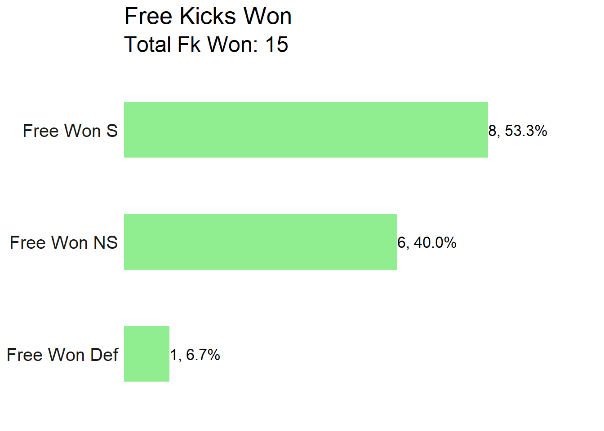

St Judes (0.11) vs St Vincents (0.04)
Dublin Senior Football Championship QF - 2019
#Summary ##Starting Line Up (Number, Player, Playing time) ###St Judes
###St Vincents
##Scores| St.Judes | St.Vincents |
|---|---|
| Clarke 0-4 (4f), | Ca Diamond 0-1 |
| McManamon 0-3 (1f), | Baxter 0-1 |
| Joyce 0-1 | Quinn 0-1 |
| Devlin 0-1 | Feeney 0-1 |
| McLoughlin 0-1 | |
| Coakley 0-1 (1f) |
| Team | Score.Eff.. | Shots.PerPoss | Scores.PP | Op.Scores.PP | Fk.Score. | Ko. |
|---|---|---|---|---|---|---|
| St Judes | 42% | 41% | 10% | 10% | 75% | 79% |
| St Vincents | 25% | 45% | 8% | 8% | 0% | 63% |
##Scoring Timeline
##Score Differential 
#Positioning & Possessions ##Average Position by Action ###St Judes ###Game
###Period
###St Vincents ###Game
###Period
##Areas of Play by Possession ###St Judes
###St Vincents
##Denisty Map (All Actions) ###St Judes
###St Vincents
##Path of Possession
| Lines | X | X.1 | X.2 |
|---|---|---|---|
| Action | Colour | Action | Colour |
| Hand Pass | Black | Kickout Lost | Dark Red |
| Run | Blue | Kick Pass Left | Pink |
| Score | Yellow | Kick Pass Right | White |
| Miss shot | Red | Fk/Mk/Sl Pass | Light Blue |
| Kickout | Gold | Pass Loss | Red |
| Dots | |||
| Action | Colour | ||
| Possession Won | Purple | ||
| Ko/Pass Lost | Red | ||
| Fk Won | Blue | ||
| Fk Won (in 45) | Orange | ||
| Kickout Won | Black |
###St Judes - Game
###Pop Starting from Possession Won
###Pop Starting from Kick Out
###St Judes - Period 1
###St Judes - Period 2
###St Judes - Period 3
###St Judes - Period 4 
###St Vincents - Game
###Pop Starting from Possession Won
###Pop Starting from Kick Out
###St Vincents Period - 1
###St Vincents Period - 2 
###St Vincents Period - 3
###St Vincents Period - 4
##45 Entries ###St Judes - Game
###St Judes - Period 1

###St Judes - Period 2
###St Judes - Period 3
###St Judes - Period 4
###St Vincents - Game
###St Vincents - Period 1
###St Vincents- Period 2
###St Vincents - Period 3

###St Vincents - Period 4
###St Judes Total
## count
## 1 41###St Judes Handpass
## count
## 1 6###St Judes Run
## count
## 1 18###St Judes Kick Pass Right
## count
## 1 6###St Judes Pass Lost
## count
## 1 3###St Judes Kick Pass Left
## count
## 1 7###St Judes Fk/Mk/Sl Pass
## count
## 1 1###St Vincents Total
## count
## 1 33###St Vincents Handpass
## count
## 1 9###St Vincents Run
## count
## 1 9###St Vincents Kick Pass Right
## count
## 1 6###St Vincents Pass Lost
## count
## 1 6###St Vincents Kick Pass Left
## count
## 1 1###St Vincents Fk/Mk/Sl Pass
## count
## 1 1#General ##Kick Outs ###St Judes
###Period 1 
###Period 2 
###Period 3
###Period 4
###Kickout Efficiency 
###Kickout Network - St Judes
###Kickout Density
###St Vincents

###Period 1
###Period 2
###Period 3
###Period 4
###Kickout Efficiency
###Kickout Network - St Vincents
###Kickout Density
##Turn overs/Possession Won
###St Judes
###St Vincents
##Frees Won ###St Judes

###St Vincents
##Frees Loss ###St Judes
###St Vincents
#Attacking
##Attacking Stats| X | Shot | Score | shot | score |
|---|---|---|---|---|
| AttTime | 00:09:38 | 00:06:18 | 00:00:00 | 00:01:58 |
| possave | 00:00:29 | 00:00:34 | 00:00:26 | 00:00:30 |
| phaseave | 00:00:19 | 00:00:20 | 00:00:15 | 00:00:30 |
| Origin Type | ||||
| Shot | Score | shot | score | |
| PW | 15 | 9 | 14 | 3 |
| Ko | 5 | 2 | 5 | 1 |
| Pitch Area Origin | ||||
| Shot | Score | shot | score | |
| Def | 11 | 6 | 11 | 4 |
| Def Mid | 5 | 2 | 3 | 0 |
| Att Mid | 2 | 0 | 5 | 0 |
| Att | 2 | 2 | 3 | 0 |
| Poss Duration | ||||
| secs | Shot | Score | shot | score |
| 0-9 | 2 | 1 | 5 | 0 |
| 10-19 | 8 | 3 | 4 | 1 |
| 20-29 | 2 | 1 | 7 | 2 |
| 30-39 | 2 | 2 | 3 | 0 |
| 40-49 | 2 | 1 | 2 | 1 |
| 50-59 | 2 | 1 | 1 | 0 |
| 60-69 | 2 | 2 | 0 | 0 |
| 70+ | 0 | 0 | 0 | 0 |
| Team | Poss | Phase | All.Shots | All.Scores | Shots.Per.Poss | Scores.PP | Shots.Op | Scores.Op | Score.Eff.. | Op.Scores.PP |
|---|---|---|---|---|---|---|---|---|---|---|
| St Judes | 49 | 65 | 20 | 11 | 41% | 22% | 12 | 5 | 42% | 10% |
| St Vincents | 49 | 65 | 22 | 4 | 45% | 8% | 16 | 4 | 25% | 8% |
| Team | Poss Time | Ave Poss Shot | Ave Phase Shot | Ave Poss Scr | Ave Phase Scr | Ave Act Poss | Ave Act Sht | Ave Act Scr | ||
| St Judes | 00:20:13 | 00:00:29 | 00:00:19 | 00:00:34 | 00:00:20 | 13.53 | 16.80 | 19.09 | ||
| St Vincents | 00:15:43 | 00:00:26 | 00:00:15 | 00:00:30 | 00:00:30 | 11.16 | 15.16 | 19.25 |
| St Judes | Shots | Time (secs) | |||||||
| Area | 0-9 | 10-19 | 20-29 | 30-39 | 40-49 | 50-59 | 60-69 | 70+ | Total |
| Def | 0 | 2 | 1 | 2 | 2 | 2 | 2 | 0 | 11 |
| Def Mid | 0 | 4 | 1 | 0 | 0 | 0 | 0 | 0 | 5 |
| Att Mid | 1 | 1 | 0 | 0 | 0 | 0 | 0 | 0 | 2 |
| Att | 1 | 1 | 0 | 0 | 0 | 0 | 0 | 0 | 2 |
| St Judes | Scores | Time (secs) | |||||||
| Area | 0-9 | 10-19 | 20-29 | 30-39 | 40-49 | 50-59 | 60-69 | 70+ | Total |
| Def | 0 | 0 | 0 | 2 | 1 | 1 | 2 | 0 | 6 |
| Def Mid | 0 | 2 | 1 | 0 | 0 | 0 | 0 | 0 | 3 |
| Att Mid | 0 | 0 | 0 | 0 | 0 | 0 | 0 | 0 | 0 |
| Att | 1 | 1 | 0 | 0 | 0 | 0 | 0 | 0 | 2 |
| St Vincents | Shots | Time (secs) | |||||||
| Area | 0-9 | 10-19 | 20-29 | 30-39 | 40-49 | 50-59 | 60-69 | 70+ | Total |
| Def | 0 | 2 | 4 | 2 | 2 | 1 | 0 | 0 | 11 |
| Def Mid | 0 | 1 | 1 | 1 | 0 | 0 | 0 | 0 | 3 |
| Att Mid | 2 | 1 | 2 | 0 | 0 | 0 | 0 | 0 | 5 |
| Att | 3 | 0 | 0 | 0 | 0 | 0 | 0 | 0 | 3 |
| St Vincents | Scores | Time (secs) | |||||||
| Area | 0-9 | 10-19 | 20-29 | 30-39 | 40-49 | 50-59 | 60-69 | 70+ | Total |
| Def | 0 | 1 | 2 | 0 | 1 | 0 | 0 | 0 | 4 |
| Def Mid | 0 | 0 | 0 | 0 | 0 | 0 | 0 | 0 | 0 |
| Att Mid | 0 | 0 | 0 | 0 | 0 | 0 | 0 | 0 | 0 |
| Att | 0 | 0 | 0 | 0 | 0 | 0 | 0 | 0 | 0 |
| Line.Colour | Time.secs |
|---|---|
| black | 1-9 |
| blue | 10-19 |
| red | 20-29 |
| purple | 30-39 |
| yellow | 40-49 |
| white | 50-59 |
| orange | 60-69 |
| pink | 70+ |
| Dot Colours | |
| Black & White | Ko Rec’d |
| White & Black | PW |
| Blue & White | Fk Pass |
| Red & White | Op Shot |
| Purple & White | Fk Shot |
| Green & White | 45 |
##Shot Possessions ###St Judes 
###Period 1 
###St Vincents
##Score Possessions ###St Judes
###St Vincents
##Open Play Shots - Location & Outcome
###St Judes
###Shot Efficiency - St Judes
###Shot Pressure - St Judes
###Shot Density
###St Vincents
###Shot Efficiency - St Vincents
###Shot Density
###Shot Pressure - St Vincents
##All Shots - Location & Outcome ###St Judes 
###All Shot Density
###Free Kick Shot Efficiency - St Judes
###St Vincents
###All Shot Density
###Free Kick Shot Efficiency - St Vincents
##All Shots Origin by Possession ###St Judes (Blue = Score)
###St Vincents (Blue = Score)
##Open Play Shot Origin by Phase ###St Judes (Blue = Score)
###St Vincents (Blue = Score)
##Shot Network ###St Judes
###St Vincents
##Score Network ###St Judes
###St Vincents
#Passing
##Pass Breakdown| X | St.Judes | St.Vincents |
|---|---|---|
| Hp | 183 | 139 |
| Kp | 63 | 46 |
| Kp Left | 32 | 9 |
| Kp Right | 31 | 37 |
| Fk Pass | 6 | 5 |
| Sl Pass | 0 | 1 |
| Mk Kp | 1 | 0 |
| Mk Hp | 0 | 0 |
| Sl Kp Won To | 3 | 1 |
| 45 Pass | 0 | 2 |
| Hp Assist | 1 | 3 |
| Kp L Assist | 2 | 0 |
| Kp R Assist | 2 | 1 |
| Hp Key | 6 | 7 |
| Kp L Key | 1 | 2 |
| Kp R Key | 0 | 1 |
| Mk Kp Key | 0 | 1 |
##All Passes ###St Judes

###St Vincents
##Passes into 45 ###St Judes
###St Vincents
##Passes Inside Opp 65 ###St Judes
###St Vincents
##Pass Network ###St Judes
###In Degree (Number of Players a Player Received a Pass from)
## Doherty Devlin McManamon Lahiff Sweeney Fitzpatrick Joyce Guckian Coakley Lost Manning Martina McLoughlin Clarke
## 15 13 13 12 10 9 9 8 8 8 7 7 7 6
## McGuire Sheehy Copeland Ryan Cunningham Wallace Kavanagh
## 5 3 2 2 1 1 0###Out Degree (Number of Players a Player Made a Pass to)
## Devlin Lahiff Doherty Joyce McManamon McGuire Guckian Martina Fitzpatrick Sweeney Coakley Manning McLoughlin Copeland
## 13 12 12 11 11 10 10 10 8 8 8 7 7 6
## Clarke Ryan Sheehy Cunningham Kavanagh Wallace Lost
## 6 3 2 2 0 0 0###Strength in (Number of Passes Received by a Player)
## Doherty Lahiff McManamon Devlin Joyce Sweeney Fitzpatrick Lost Manning McGuire Guckian Martina McLoughlin Coakley
## 32 27 25 23 23 16 13 13 11 11 11 11 11 10
## Clarke Ryan Sheehy Copeland Cunningham Wallace Kavanagh
## 10 3 3 2 1 1 0###Strength Out (Number of Passes/Shots Made by a Player)
## Doherty Lahiff Devlin Joyce McManamon Sweeney Fitzpatrick Martina McGuire Manning Guckian Copeland McLoughlin Coakley
## 34 27 25 22 19 18 16 15 13 12 12 9 9 9
## Clarke Sheehy Ryan Cunningham Kavanagh Wallace Lost
## 8 4 3 2 0 0 0###Betweenness Centrality (Flow of Passes through a Player)
## Lahiff Devlin McManamon Doherty Sweeney Coakley Fitzpatrick McGuire Martina Joyce Guckian Lost Copeland
## 0.1198191083 0.1044162707 0.0638677480 0.0519291377 0.0272329142 0.0270109636 0.0227302645 0.0118542045 0.0095240020 0.0091331386 0.0073579259 0.0067230576 0.0064014202
## Manning McLoughlin Ryan Clarke Sheehy Cunningham Kavanagh Wallace
## 0.0054636128 0.0048904793 0.0034901648 0.0019901739 0.0003759398 0.0000000000 0.0000000000 0.0000000000###Closeness Centrality (How Well connected and central a Player is within the Teams Network)
## Devlin Lahiff Doherty McManamon Fitzpatrick Sweeney Guckian Martina Joyce Coakley Manning McGuire McLoughlin Clarke
## 0.48780488 0.46511628 0.46511628 0.45454545 0.42553191 0.42553191 0.41666667 0.41666667 0.41666667 0.41666667 0.40816327 0.40816327 0.40816327 0.40000000
## Copeland Lost Ryan Sheehy Cunningham Wallace Kavanagh
## 0.39215686 0.39215686 0.36363636 0.36363636 0.35087719 0.32786885 0.04761905###Entropy (The Unpredictability in who a Player Passes to/Takes shot)
## Sheehy Fitzpatrick Devlin Copeland Lahiff McManamon Lost Doherty Manning McGuire Joyce Clarke Martina McLoughlin
## 0.9165164 0.9428497 0.9434353 0.9484503 0.9496228 0.9571585 0.9577136 0.9588754 0.9597205 0.9602596 0.9614763 0.9655108 0.9663852 0.9676491
## Sweeney Ryan Guckian Coakley Cunningham
## 0.9677089 0.9697239 0.9726693 0.9830345 1.0000000###Global clustering coefficient (Groups of Players who pass to each other)
## [1] 0.6790909###eigen_centrality (How well connected the well connected are)
## Doherty Lahiff Joyce Devlin McManamon Sweeney Fitzpatrick Martina McGuire Manning Guckian McLoughlin Coakley Clarke
## 1.00000000 0.88647310 0.81443904 0.80199666 0.70243570 0.62253291 0.48959438 0.43512184 0.43504061 0.40353782 0.39593974 0.34436760 0.31429781 0.29642940
## Lost Copeland Sheehy Kavanagh Ryan Cunningham Wallace
## 0.22722370 0.15424399 0.14134260 0.09539531 0.05761239 0.05721795 0.02384664##St Vincents
###In Degree (Number of Players a Player Received a Pass from)
## Burke Concarr Lambe Lost McCusker Connolly Co. Diamond Martin Mullins Giblin Ca. Diamond Lowry Quinn Curley
## 13 11 11 10 9 8 8 7 7 7 6 6 6 5
## Feeney O Meara Varley Baxter Breathnach Fennell Murphy Savage
## 5 5 4 4 4 4 3 2###Out Degree (Number of Players a Player Made a Pass to)
## Burke Concarr Lambe McCusker Ca. Diamond Co. Diamond Curley Martin Connolly Mullins Giblin Lowry Feeney Fennell
## 14 12 12 10 10 10 9 8 8 7 6 5 5 5
## Savage Quinn Breathnach O Meara Varley Baxter Murphy Lost
## 4 4 4 4 3 3 2 0###Strength in (Number of Passes Received by a Player)
## Burke Lost McCusker Lambe Concarr Ca. Diamond Co. Diamond Martin Connolly Giblin Quinn Mullins Lowry Feeney
## 21 18 17 16 14 12 11 10 9 9 8 7 6 6
## Curley Varley Baxter O Meara Fennell Breathnach Savage Murphy
## 5 5 5 5 5 4 3 3###Strength Out (Number of Passes/Shots Made by a Player)
## Burke McCusker Lambe Concarr Ca. Diamond Curley Co. Diamond Connolly Martin Savage Mullins Giblin Quinn Lowry
## 23 20 20 18 15 13 13 10 9 7 7 7 6 5
## Feeney Fennell Breathnach O Meara Varley Baxter Murphy Lost
## 5 5 4 4 3 3 2 0###Betweenness Centrality (Flow of Passes through a Player)
## Concarr Burke McCusker Lambe Connolly Co. Diamond Giblin Curley Martin Mullins Ca. Diamond Lost Lowry Feeney
## 0.105330480 0.100529488 0.076138154 0.076076635 0.039732688 0.034725900 0.028107607 0.027967680 0.024205426 0.021005101 0.017065507 0.015644082 0.012894579 0.011180112
## O Meara Quinn Breathnach Fennell Varley Baxter Murphy Savage
## 0.011080877 0.010622151 0.005247715 0.003924437 0.003827839 0.002056178 0.001208791 0.000000000###Closeness Centrality (How Well connected and central a Player is within the Teams Network)
## Concarr Burke Lambe McCusker Co. Diamond Curley Ca. Diamond Martin Connolly Lost Mullins Lowry Giblin Quinn
## 0.8076923 0.8076923 0.8076923 0.7500000 0.7000000 0.6774194 0.6774194 0.6774194 0.6562500 0.6562500 0.6363636 0.6363636 0.6363636 0.6176471
## Feeney Fennell Varley Breathnach O Meara Savage Murphy Baxter
## 0.6000000 0.5833333 0.5675676 0.5675676 0.5675676 0.5384615 0.5384615 0.5250000###Entropy (The Unpredictability in who a Player Passes to/Takes shot)
## McCusker Burke Lost Lambe Curley Ca. Diamond Martin Concarr Co. Diamond Quinn Savage Varley Baxter Giblin
## 0.9160516 0.9323121 0.9416179 0.9517935 0.9564656 0.9640491 0.9693499 0.9705448 0.9720820 0.9741109 0.9756150 0.9795698 0.9795698 0.9796133
## Connolly Fennell Feeney Mullins Lowry Breathnach Murphy O Meara
## 0.9830345 0.9848587 0.9866600 1.0000000 1.0000000 1.0000000 1.0000000 1.0000000###Global clustering coefficient (Groups of Players who pass to each other)
## [1] 0.5489614###eigen_centrality (How well connected the well connected are)
## Burke McCusker Lambe Ca. Diamond Concarr Co. Diamond Lost Martin Curley Giblin Connolly Quinn Mullins Savage
## 1.0000000 0.9564057 0.8392084 0.7417526 0.6778897 0.5940155 0.5108634 0.4759575 0.4513584 0.3735328 0.3498196 0.3398769 0.3205086 0.2946884
## Feeney Fennell Lowry Breathnach O Meara Varley Murphy Baxter
## 0.2699658 0.2454713 0.2335610 0.1849525 0.1736792 0.1547449 0.1240977 0.1184855#Player Stats ##Player On Ball Possession (Number, Player, Total) ###St Judes
###St Vincents
##Posessions Per Playing Time
##Player % involvement and shot efficiency| Team | ply | opshots | Totteamshot | opscr | Totteamscr | convrate |
|---|---|---|---|---|---|---|
| St Judes | Copeland | 0 | 0% | 0 | 0% |
|
| St Judes | Manning | 0 | 0% | 0 | 0% |
|
| St Judes | McGuire | 0 | 0% | 0 | 0% |
|
| St Judes | Fitzpatrick | 0 | 0% | 0 | 0% |
|
| St Judes | Lahiff | 1 | 8% | 0 | 0% | 0% |
| St Judes | Guckian | 0 | 0% | 0 | 0% |
|
| St Judes | Martina | 0 | 0% | 0 | 0% |
|
| St Judes | Sweeney | 0 | 0% | 0 | 0% |
|
| St Judes | Doherty | 0 | 0% | 0 | 0% |
|
| St Judes | Devlin | 2 | 17% | 1 | 20% | 50% |
| St Judes | McLoughlin | 2 | 17% | 1 | 20% | 50% |
| St Judes | Joyce | 1 | 8% | 1 | 20% | 100% |
| St Judes | Coakley | 0 | 0% | 0 | 0% |
|
| St Judes | McManamon | 6 | 50% | 2 | 40% | 33% |
| St Judes | Clarke | 0 | 0% | 0 | 0% |
|
| St Judes | Ryan | 0 | 0% | 0 | 0% |
|
| St Judes | Sheehy | 0 | 0% | 0 | 0% |
|
| St Judes | Cunningham | 0 | 0% | 0 | 0% |
|
| St Judes | Kavanagh | 0 | 0% | 0 | 0% |
|
| St Judes | Wallace | 0 | 0% | 0 | 0% |
|
| Team | ply | opshots | Totteamshot | opscr | Totteamscr | convrate |
|---|---|---|---|---|---|---|
| St Vincents | Savage | 0 | 0% | 0 | 0% |
|
| St Vincents | McCusker | 0 | 0% | 0 | 0% |
|
| St Vincents | Curley | 0 | 0% | 0 | 0% |
|
| St Vincents | Concarr | 1 | 6% | 0 | 0% | 0% |
| St Vincents | Burke | 0 | 0% | 0 | 0% |
|
| St Vincents | Ca. Diamond | 1 | 6% | 1 | 33% | 100% |
| St Vincents | Lambe | 0 | 0% | 0 | 0% |
|
| St Vincents | Martin | 0 | 0% | 0 | 0% |
|
| St Vincents | Mullins | 1 | 6% | 0 | 0% | 0% |
| St Vincents | Lowry | 2 | 13% | 0 | 0% | 0% |
| St Vincents | Connolly | 1 | 6% | 0 | 0% | 0% |
| St Vincents | Co. Diamond | 0 | 0% | 0 | 0% |
|
| St Vincents | Varley | 1 | 6% | 0 | 0% | 0% |
| St Vincents | Baxter | 2 | 13% | 1 | 33% | 50% |
| St Vincents | Quinn | 3 | 19% | 1 | 33% | 33% |
| St Vincents | Feeney | 1 | 6% | 1 | 33% | 100% |
| St Vincents | Breathnach | 0 | 0% | 0 | 0% |
|
| St Vincents | Giblin | 1 | 6% | 0 | 0% | 0% |
| St Vincents | Murphy | 1 | 6% | 0 | 0% | 0% |
| St Vincents | O Meara | 1 | 6% | 0 | 0% | 0% |
| St Vincents | Fennell | 0 | 0% | 0 | 0% |
|
##Open Play Shots vs Playing Time
##Open Play Scores vs Playing Time
##Open Play Shots vs Open Play Score 
##Open Play Assists vs Playing Time
##Open Play Key Passes vs Playing time
##Player Possession Involvement ###St Judes
###St Vincents
##Player Shot Involvement ###St Judes
###St Vincents
##Player Score Involvement ###St Judes 
###St Vincents
##Actions and Zones ##By Period ###St Judes
###St Vincents
##Zones Frequency ###St Judes
###St Vincents